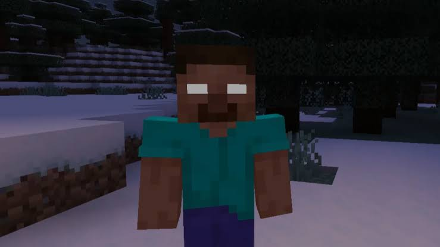
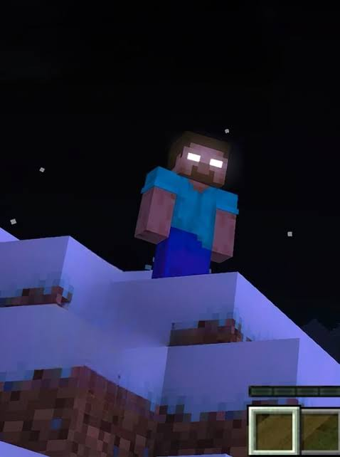

Herobrine is one of the most famous Minecraft legends ever created. For years players have shared stories about a mysterious character with glowing white eyes appearing inside their worlds. While Herobrine has never officially existed in Minecraft, this fan-made addon brings the legend to life and creates a much more exciting survival experience.
What Is Herobrine Mod?
The Herobrine Mod is a Minecraft PE addon that introduces Herobrine-themed gameplay, powerful bosses, creepy encounters, special abilities and challenging adventures. Players can explore their worlds while facing mysterious events inspired by one of Minecraft's most famous myths.

Features
- ✔ Herobrine Boss Battles
- ✔ Creepy Encounters
- ✔ Powerful Special Abilities
- ✔ Horror Inspired Gameplay
- ✔ Survival Mode Compatible
- ✔ Multiplayer Support
- ✔ Custom Effects & Attacks
- ✔ New Challenges For Minecraft PE
Why Players Love This Mod
Many players enjoy Minecraft mysteries and horror adventures. The Herobrine Mod combines survival gameplay with one of the community's most iconic legends. Every encounter feels exciting and unpredictable, making normal Minecraft gameplay much more intense.
Whether you are exploring caves, surviving the night or fighting powerful enemies, the addon creates memorable moments that many players enjoy sharing with friends.

Installation Guide
1. Download the Herobrine Mod using the button below.
2. Open the downloaded file with Minecraft PE.
3. Import the addon into the game.
4. Enable it inside world settings.
5. Create a world and start your adventure.
📥 Download Herobrine Mod
Add the legendary Herobrine to your Minecraft PE world and experience one of the most famous Minecraft myths.
Download ModCredits: This addon belongs to its original creator and publisher. Hero Hub only provides information and access links for educational and review purposes.